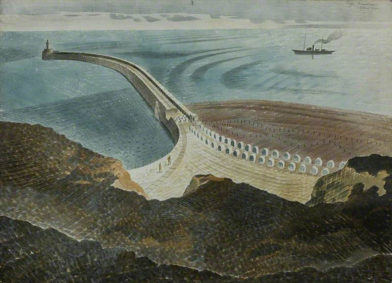
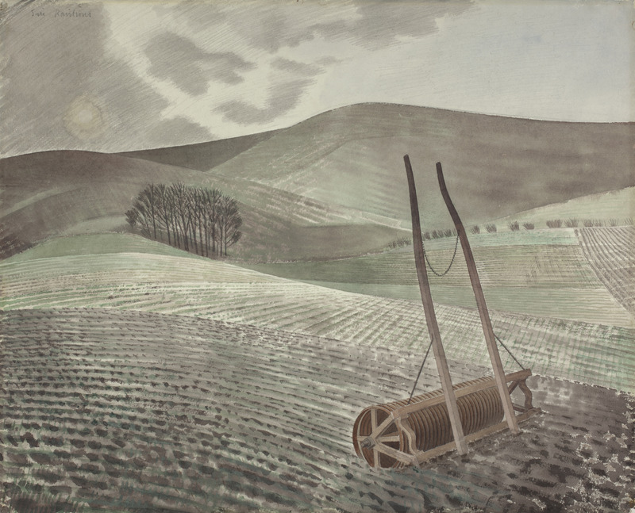
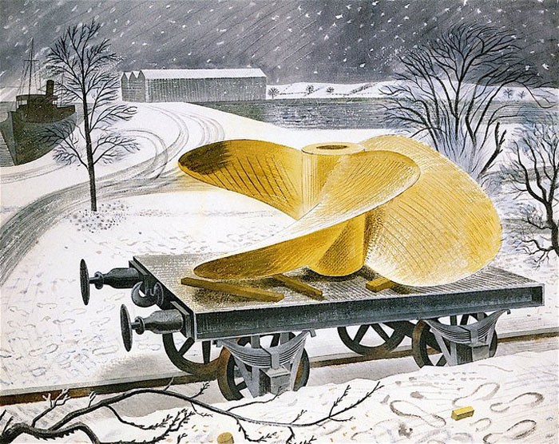
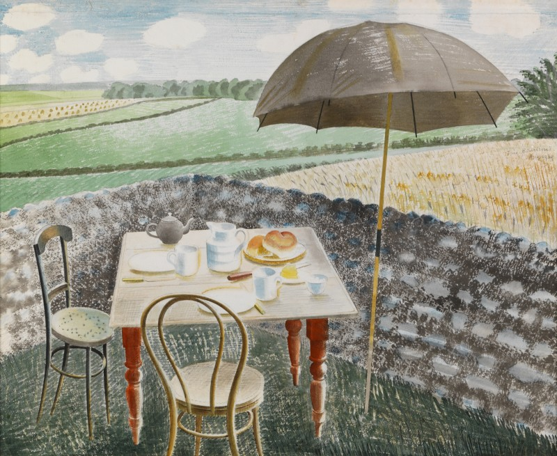
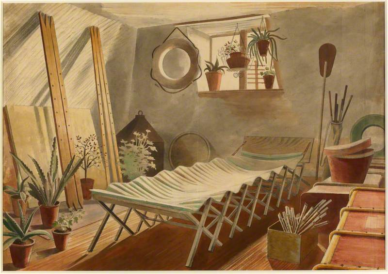
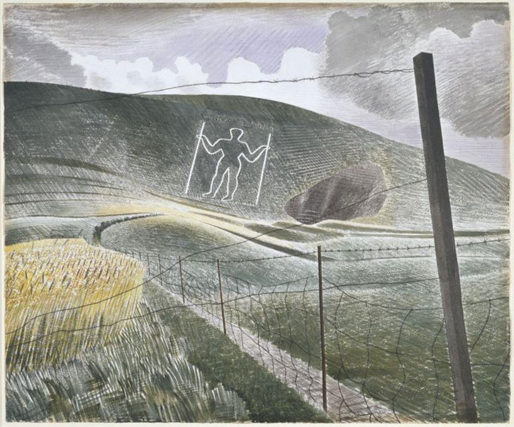
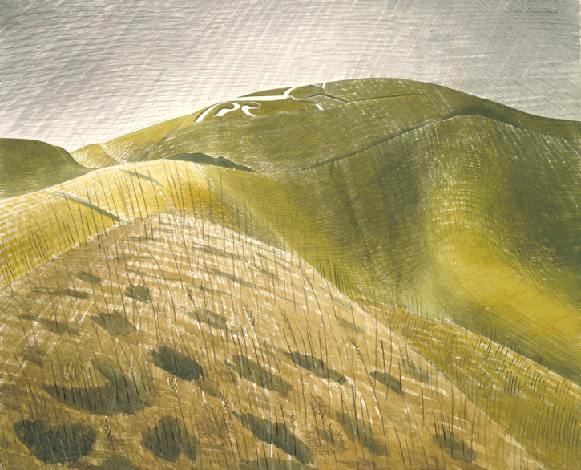
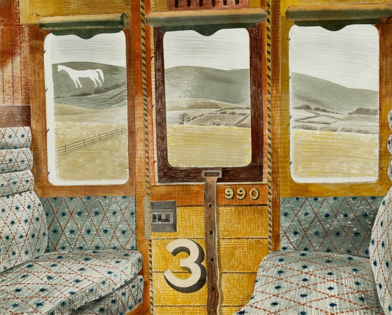

Artworks

'Coastal Defences' Watercolour, 1940

'Downs In Winter' Watercolour, 1934

'Ship's Screw On A Railway Truck' Watercolour over graphite on paper, 1940

'Tea At Furlongs' Watercolour, 1939

'The Attic Bedroom' Watercolour, 1932-34

'The Long Man of Wilmington' Watercolour on paper, 1939

'The Vale of The White Horse' Watercolour on paper, 1939

'Train Landscape' Watercolour and collage on paper, 1939-1940